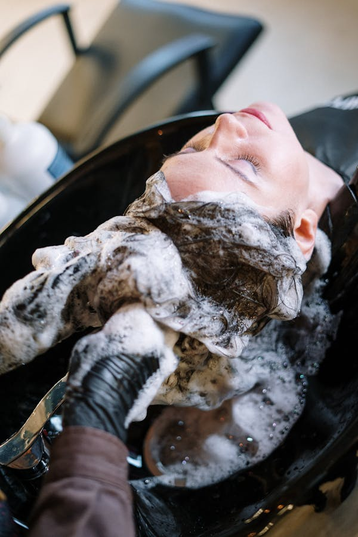

Ozonioterapia
A ozonioterapia é um dos pilares do tratamento capilar — melhora circulação, reduz inflamação e estimula o crescimento.
Saiba MaisProtocolo especializado com ozonioterapia capilar e bioestimulantes para tratar alopécia, calvície e queda de cabelo. Resultados progressivos na LC Estética, Connect Towers — Águas Claras, Brasília DF.

A queda de cabelo afeta a autoestima e pode ter diversas causas: genética, hormonal, estresse, deficiências nutricionais ou doenças autoimunes. O diagnóstico preciso é o primeiro passo para um tratamento eficaz.
Na LC Estética em Águas Claras, a Dra. Lara Cristian utiliza um protocolo integrado que combina ozonioterapia capilar e enzimas bioestimulantes para estimular os folículos pilosos, melhorar a circulação no couro cabeludo e reduzir a inflamação que contribui para a queda.
O tratamento é realizado em duas frentes complementares: a ozonioterapia atua melhorando a oxigenação e circulação do couro cabeludo, criando um ambiente favorável ao crescimento capilar; e as enzimas bioestimulantes fornecem os nutrientes e fatores de crescimento diretamente nos folículos pilosos através de microinjeções.
Essa combinação é especialmente eficaz para a alopécia areata (manchas de queda) e o eflúvio telógeno (queda difusa por estresse ou alterações hormonais).
Queda em manchas circulares causada por reação autoimune. O protocolo integrativo obtém bons resultados na maioria dos casos.
Queda de padrão masculino ou feminino por fator hormonal e genético. Tratamento ajuda a retardar e estabilizar a queda.
Queda difusa por estresse, pós-parto, dietas restritivas ou doenças. Excelente resposta ao tratamento com boas taxas de recuperação.
Queda hormonal após o parto. Um dos tipos mais responsivos ao tratamento, com recuperação geralmente completa.
Fios finos, quebradiços ou sem brilho. O protocolo nutre e fortalece os fios desde a raiz, melhorando textura e volume.
Para quem quer manter a saúde capilar e prevenir a queda prematura com protocolos de manutenção periódica.
Os primeiros resultados visíveis costumam aparecer entre a 4ª e a 8ª sessão: redução da queda, surgimento de fios novos (penugem) e melhora do couro cabeludo. O tratamento completo geralmente leva de 3 a 6 meses.
A manutenção mensal ou bimestral após o protocolo inicial é importante para consolidar os resultados, especialmente em casos de alopécia androgenética onde a causa (hormonal/genética) persiste.
Alopécia é o nome médico para a queda e perda de cabelo. Pode ser localizada (areata), difusa (eflúvio telógeno) ou androgenética (calvície). O tratamento precoce dá os melhores resultados.
Sim. A ozonioterapia melhora a circulação no couro cabeludo, reduz a inflamação dos folículos e estimula fatores de crescimento. Estudos mostram resultados positivos especialmente em alopécia areata e eflúvio telógeno.
O protocolo padrão é de 8 a 12 sessões semanais ou quinzenais. Os primeiros resultados aparecem entre a 4ª e 8ª sessão. A manutenção mensal é recomendada após o tratamento.
As aplicações são feitas com agulhas muito finas no couro cabeludo. Pode haver leve desconforto semelhante a pequenas picadas. A maioria tolera bem o procedimento de 30 a 45 minutos.
Sim. O tratamento é indicado para homens e mulheres com qualquer tipo de alopécia. A calvície androgenética masculina também responde bem ao protocolo, especialmente nas fases iniciais.
Connect Towers, Águas Claras — Brasília DF | Segunda a Sexta: 08:00–18:00
A ozonioterapia é um dos pilares do tratamento capilar — melhora circulação, reduz inflamação e estimula o crescimento.
Saiba MaisA nutrição celular complementa o tratamento capilar, fornecendo os nutrientes necessários para o crescimento saudável dos fios.
Saiba MaisA abordagem integrativa trata as causas da queda (hormonal, inflamatória, autoimune) junto com o tratamento local.
Saiba Mais